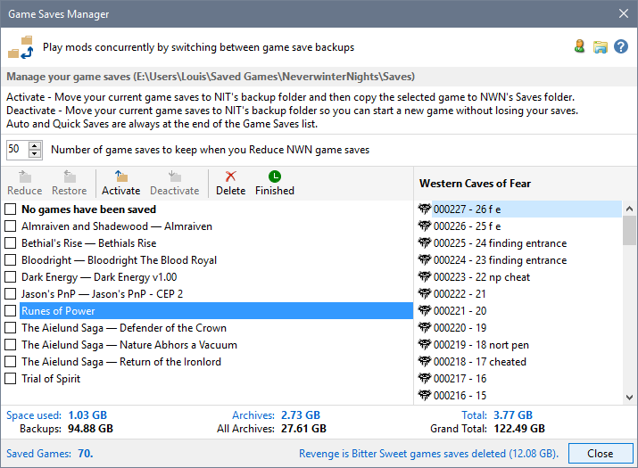
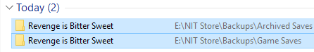
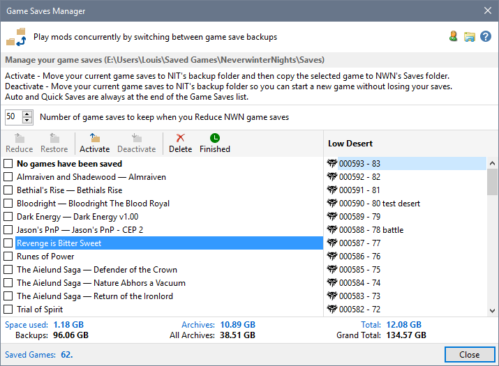

Deleted game save Backups and Archives are moved to the Recycle Bin or permanently deleted depending on your Recycle Bin for Game Saves Preference in Advanced Settings. If your preference is set to the Recycle Bin, you can reinstate game saves you regret deleting.



Mod Play Time information associated with restored deleted games is lost. Play Times will be shown as Unknown until you use NWN to load a saved game and start playing again.
Automatic backup of Game Saves
Display Character Summary Information
Open a game save folder with Windows File Explorer
Restore Game Saves from Backup
Reduce the number of NWN Game Saves
Restoring deleted saves from the Recycle Bin